Section 2 Data Overview
We will detail the study sites and summarize the number of piles and the pile size based on available measurements.
| Site Name | Pile Type | Validation Data Type | Unique Features & Ecology | Data Collection (UAS Platform & Parameters) |
|---|---|---|---|---|
| PSINF Mixed Conifer Site | Hand Piles and smaller machine piles | Image-annotated footprints and field-measured height and diameter | Located in the Pike and San Isabel National Forest (PSINF) in CO, US. Mixed conifer stand with variable ground cover and canopy density. | Switchblade-Elite (Vision Aerial) with 24.2 MP RGB sensor (16 mm lens). Altitude xx m, 90% forward and 85% side overlap, 4 m/s speed. |
| TRFO-BLM Pinyon-Juniper Site | Hand Piles | Image-annotated footprints based on field collected point locations | Located on BLM land in CO, US. Arid environment with dry vegetation including standing dead pinyon-juniper. Piles are smaller, simpler, and hand-stacked. | Freefly Astro with Sony ILX-LR1 (35mm lens). Altitude 243.84 m (terrain following), 85% forward and 80% side overlap. |
| BHEF Ponderosa Pine Site | Machine Piles | Image-annotated footprints | Located in the Black Hills Experimental Forest (BHEF) in SD, US. Piles are massive, mechanically built, and irregularly shaped (e.g. not necessarily circular). Tree regeneration is expected. | DJI Phantom 4 Pro with 20 MP RGB sensor (8.8 mm lens). Altitude 80 m, 90% forward and 85% side overlap, 4 m/s speed. |
| ARNF Ponderosa Pine Site | Machine Piles | Image-annotated footprints | Located in the Arapahoe and Roosevelt National Forest (ARNF) in CO, US. Ponderosa pine forest with a climate similar to PSINF. Machine piles are massive but more circular and regular. Less regeneration is expected. | Switchblade-Elite (Vision Aerial) with 24.2 MP RGB sensor (16 mm lens). Altitude xx m, 90% forward and 85% side overlap, 4 m/s speed. |
Load the standard libraries we use to do work
# bread-and-butter
library(tidyverse) # the tidyverse
library(viridis) # viridis colors
library(harrypotter) # hp colors
library(RColorBrewer) # brewer colors
library(scales) # work with number and plot scales
library(latex2exp)
# visualization
library(mapview) # interactive html maps
library(kableExtra) # tables
library(patchwork) # combine plots
library(corrplot) # correlation plots
library(ggnewscale) # new scale
library(grDevices) # default graphics
# spatial analysis
library(terra) # raster
library(sf) # simple features
library(lwgeom) # advanced functions for spatial operations
library(lidR) # lidar data
library(rgl) # 3d plots
library(cloud2trees) # the cloud2trees2.1 Study Units Vector Data
let’s load in all the vector data containing the study units
we’ll combine the study unit boundaries for all sites to create a spatial data set that contains all units for plotting in a single map
# read the data
# stand boundary
all_stand_boundary <-
dplyr::bind_rows(
psinf_stand_boundary %>%
sf::st_transform(crs = 5070) %>%
dplyr::select(site) %>%
sf::st_set_geometry("geometry")
, pj_stand_boundary %>%
sf::st_transform(crs = 5070) %>%
dplyr::select(site) %>%
sf::st_set_geometry("geometry")
, bhef_stand_boundary %>%
sf::st_transform(crs = 5070) %>%
dplyr::select(site) %>%
sf::st_set_geometry("geometry")
, arnf_stand_boundary %>%
sf::st_transform(crs = 5070) %>%
dplyr::select(site) %>%
sf::st_set_geometry("geometry")
) %>%
dplyr::group_by(site) %>%
dplyr::summarise(
geometry = sf::st_union(geometry)
) %>%
dplyr::ungroup() %>%
sf::st_set_geometry("geometry") %>%
dplyr::mutate(
site_area_m2 = sf::st_area(geometry) %>% as.numeric()
, site_area_ha = site_area_m2/10000
)
# sf::st_centroid() %>%
# sf::st_sf() %>% Let’s map the study sites on a single map
sites_pal <- RColorBrewer::brewer.pal(n = nrow(all_stand_boundary), name = "Dark2")
# option to put satellite imagery as base layer of mapview maps
mapview::mapviewOptions(
homebutton = T
# , basemaps = c("Esri.WorldImagery","OpenStreetMap")
, basemaps = c("OpenStreetMap", "Esri.WorldImagery")
)
# map it
mapview::mapview(
all_stand_boundary %>%
dplyr::group_by(site) %>%
sf::st_centroid()
, zcol="site"
, col.regions = sites_pal
, cex = 8
, layer.name = "study sites"
)static map for printing
let’s make a pretty image for use in the journal article. we’ll use the ggmap package to get a nice background map and do some transformation to actually work with the map. We’ll add a map scale using ggspatial
library(ggmap)
library(ggspatial)
#########################################################################
#########################################################################
# Make each plot individually by landscape as solution to small multiples
# this block defines function
#########################################################################
##################hack to align plots for ggmap
ggmap_bbox_fn <- function(map, my_crs=3857) {
if (!inherits(map, "ggmap")) stop("map must be a ggmap object")
# Extract the bounding box (in lat/lon) from the ggmap to a numeric vector,
# and set the names to what sf::st_bbox expects:
map_bbox <- setNames(unlist(attr(map, "bb")), c("ymin", "xmin", "ymax", "xmax"))
# Convert the bbox to an sf polygon, transform it to 3857,
# and convert back to a bbox (convoluted, but it works)
bbox_3857 <- st_bbox(st_transform(st_as_sfc(st_bbox(map_bbox, crs = 4326)), my_crs))
# Overwrite the bbox of the ggmap object with the transformed coordinates
attr(map, "bb")$ll.lat <- bbox_3857["ymin"]
attr(map, "bb")$ll.lon <- bbox_3857["xmin"]
attr(map, "bb")$ur.lat <- bbox_3857["ymax"]
attr(map, "bb")$ur.lon <- bbox_3857["xmax"]
map
}
plt_crs <- 3857
#########################################################################
#########################################################################
#########################################################################
my_ggmap_basemap <- function(sf_data, zoom_level = 14, buffer_box = 2600, my_crs = plt_crs, scale_location = "bl", my_maptype = "stamen_terrain") {
# # should zoom in?
# zoom_level <- 14 # 11
# # should buffer extend?
# buffer_box <- 2600 # 20000
# bounding box
bb_temp <-
sf_data %>%
sf::st_bbox() %>%
sf::st_as_sfc() %>%
sf::st_transform(crs=5070) %>%
sf::st_buffer(as.numeric(buffer_box)) %>%
sf::st_transform(crs=4326) %>% # same as get_map return
sf::st_bbox()
# set bbox for get call
bbox_temp <- c(
bottom = bb_temp[[2]]
, top = bb_temp[[4]]
, right = bb_temp[[3]]
, left = bb_temp[[1]]
)
hey_ggmap <- ggmap::get_stadiamap(
bbox = bbox_temp
, zoom = zoom_level
, maptype = my_maptype #"stamen_terrain" #"stamen_toner_lite"
, crop = T
)
# ggmap::ggmap(hey_ggmap)
# apply align function
hey_ggmap_aligned <- ggmap_bbox_fn(hey_ggmap, my_crs) # Use the function
# plot
plt_basemap <-
ggmap::ggmap(hey_ggmap_aligned) +
ggplot2::coord_sf(
expand = FALSE
) +
ggplot2::theme_light() +
ggplot2::theme(
legend.position = "none"
, plot.title = ggplot2::element_blank()
, strip.text = ggplot2::element_blank()
, axis.title = ggplot2::element_blank()
, axis.text = ggplot2::element_blank()
, axis.ticks = ggplot2::element_blank()
, panel.grid = ggplot2::element_blank()
, plot.margin = ggplot2::margin(0, 0, 0, 0, "cm")
)
if(scale_location %in% c("bl", "br", "tr", "tl")){
plt_basemap <- plt_basemap +
ggspatial::annotation_scale(
location = scale_location
, style = "ticks"
, pad_x = unit(0.1, "cm")
, pad_y = unit(0.1, "cm")
)
}
return(plt_basemap)
}plot the fancy basemap with the points
# get the basemap with our my_ggmap_basemap()
plt_basemap <- my_ggmap_basemap(
sf_data = all_stand_boundary %>% dplyr::group_by(site) %>% sf::st_point_on_surface()
, buffer_box = 190000
, zoom_level = 7
, my_maptype = "stamen_terrain"
)
# plt_basemap
# plot
plt2_temp <-
plt_basemap +
ggplot2::geom_sf(
data = all_stand_boundary %>%
dplyr::group_by(site) %>%
sf::st_point_on_surface() %>%
sf::st_transform(crs=plt_crs)
, mapping = ggplot2::aes(fill = site)
, size = 4.5
, inherit.aes = F
, shape = 21
, color = "gray88"
, fill = "blue2"
) +
ggplot2::geom_sf_label(
data = all_stand_boundary %>%
dplyr::group_by(site) %>%
sf::st_point_on_surface() %>%
sf::st_transform(crs=plt_crs)
, mapping = ggplot2::aes(label = stringr::str_wrap(site, width = 40))
, size = 2.5
, hjust = -0.055
, vjust = 0.4
, inherit.aes = F
) +
ggplot2::scale_fill_manual(values = sites_pal)
plt2_temp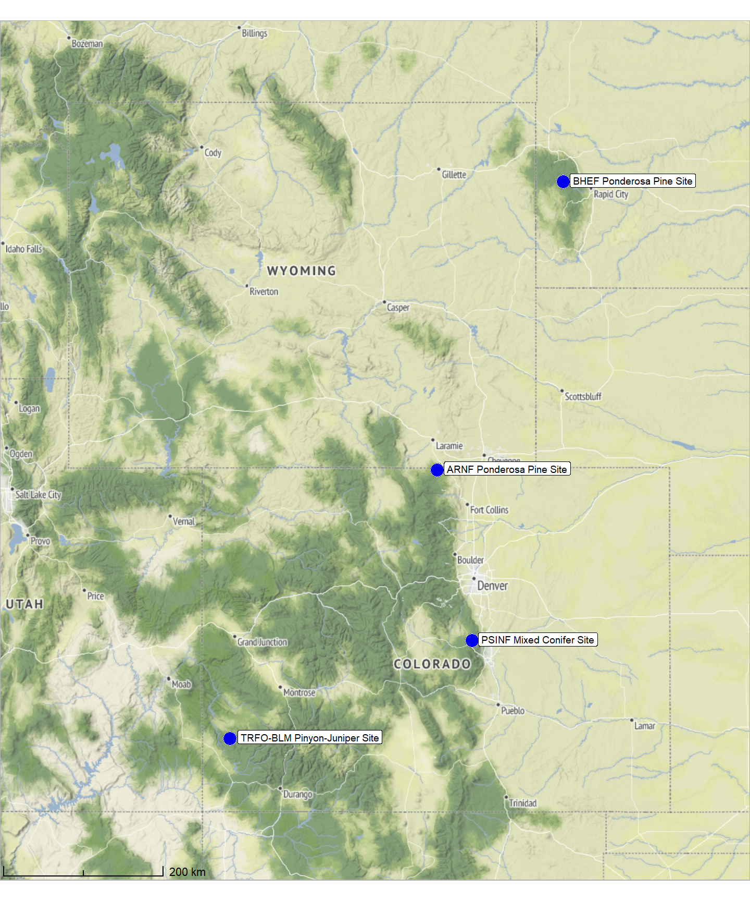
what is the area of the treatment unit boundaries we are looking over?
all_stand_boundary %>%
sf::st_drop_geometry() %>%
dplyr::select(site, site_area_ha) %>%
dplyr::mutate(
site_area_ha = scales::comma(site_area_ha, suffix = " ha", accuracy = 0.1)
) %>%
kableExtra::kbl(
caption = "Study site area"
, col.names = c(
"site", "hectares"
)
, escape = F
) %>%
kableExtra::kable_styling()| site | hectares |
|---|---|
| ARNF Ponderosa Pine Site | 73.6 ha |
| BHEF Ponderosa Pine Site | 103.1 ha |
| PSINF Mixed Conifer Site | 17.5 ha |
| TRFO-BLM Pinyon-Juniper Site | 5.2 ha |
2.2 Slash Pile Vector Data
Image-annotated pile footprints at each study site were created in a GIS by outlining pile boundaries on the RGB orthomosaic and confirming the vertical structure using fine-resolution CHM data (e.g., 0.15m resolution). Field-collected points were used to ensure pile census completeness at the hand-pile study sites (PSINF Mixed Conifer Site and TRFO-BLM Pinyon-Juniper Site) to pinpoint piles that were otherwise challenging to delineate from the aerial imagery and CHM data alone. Across all sites, machine piles were easily distinguishable using the RGB and CHM data.
Let’s load in those image-annotated pile polygons now for each study site.
#######################################
# polygons annotated using RGB and field-collected points
#######################################
###########################
# PSINF Mixed Conifer Site
###########################
psinf_slash_piles_polys <- sf::st_read(
"../data/PFDP_Data/PFDP_SlashPiles/manitou_pile_polys.shp"
, quiet = T
) %>%
dplyr::rename_with(tolower) %>%
sf::st_make_valid() %>%
dplyr::filter(sf::st_is_valid(.)) %>%
# fix multipolygons
dplyr::ungroup() %>%
dplyr::mutate(treeID = dplyr::row_number()) %>%
cloud2trees::simplify_multipolygon_crowns() %>%
dplyr::select(-c(treeID, shape_leng, shape_area)) %>%
dplyr::mutate(site = "PSINF Mixed Conifer Site")
# points recorded in field
psinf_slash_piles_points <- sf::st_read(
"../data/PFDP_Data/PFDP_SlashPiles/SlashPiles.shp"
, quiet = T
) %>%
dplyr::rename_with(tolower) %>%
sf::st_zm() %>%
sf::st_transform(sf::st_crs(psinf_slash_piles_polys)) %>%
dplyr::filter( !(objectid %in% c(43)) ) %>% # duplicate field points
dplyr::mutate(row_number = dplyr::row_number()) %>%
dplyr::select(-c(objectid)) %>%
dplyr::rename(
height_ft = height
, diameter_ft = diameter
)
# update unit boundary to pile proj
psinf_stand_boundary <- psinf_stand_boundary %>% sf::st_transform(sf::st_crs(psinf_slash_piles_polys))
# attach flag for spatial overlap with unit boundary
psinf_slash_piles_polys <- psinf_slash_piles_polys %>%
dplyr::left_join(
psinf_slash_piles_polys %>%
sf::st_intersection(psinf_stand_boundary) %>%
sf::st_drop_geometry() %>%
dplyr::select(pile_id) %>%
dplyr::mutate(is_in_stand = T)
, by = "pile_id"
) %>%
dplyr::mutate(
is_in_stand = dplyr::coalesce(is_in_stand, F)
)
###########################
# TRFO-BLM Pinyon-Juniper Site
###########################
pj_slash_piles_polys <-
sf::st_read("../data/Dawson_Data/piles/pj_pile_polys.shp", quiet=T) %>%
dplyr::rename_with(tolower) %>%
sf::st_make_valid() %>%
dplyr::filter(sf::st_is_valid(.)) %>%
# fix multipolygons
dplyr::mutate(
pile_id = dplyr::row_number()
, treeID = dplyr::row_number()
) %>%
cloud2trees::simplify_multipolygon_crowns() %>%
dplyr::select(-c(treeID,id)) %>%
dplyr::filter(pile_id!=62) %>%
dplyr::mutate(site = "TRFO-BLM Pinyon-Juniper Site")
# points recorded in field
# these piles were collected twice in the same location and have different measurements :\
bad_pile_ids_temp <- c(
142
, 146
, 99
, 96
, 50
)
pj_slash_piles_points <-
readr::read_csv("../data/Dawson_data/PJ_Piles_Unit_10.csv", progress = T, show_col_types = F) %>%
dplyr::rename_with(tolower) %>%
dplyr::rename_with(stringr::str_squish) %>%
dplyr::rename_with(make.names) %>%
dplyr::rename_with(~stringr::str_replace_all(.x, "\\.{2,}", ".")) %>%
dplyr::rename_with(~stringr::str_remove(.x, "\\.$")) %>%
dplyr::rename_with(~stringr::str_replace_all(.x, "\\.", "_")) %>%
dplyr::mutate(
orig_pile_id = readr::parse_number(name)
) %>%
dplyr::filter(
!(orig_pile_id %in% bad_pile_ids_temp)
) %>%
sf::st_as_sf(coords = c("easting","northing"), crs = 6342, remove = F) %>%
dplyr::select(orig_pile_id,name,height_m,width_m,easting,northing,latitude,longitude,code,description,elevation) %>%
sf::st_make_valid() %>%
sf::st_transform(sf::st_crs(pj_slash_piles_polys))## indexing PJ_Piles_Unit_10.csv [=============================] 1.21GB/s, eta: 0s # update unit boundary to pile proj
pj_stand_boundary <- pj_stand_boundary %>% sf::st_transform(sf::st_crs(pj_slash_piles_polys))
# attach flag for spatial overlap with unit boundary
pj_slash_piles_polys <- pj_slash_piles_polys %>%
dplyr::left_join(
pj_slash_piles_polys %>%
sf::st_intersection(pj_stand_boundary) %>%
sf::st_drop_geometry() %>%
dplyr::select(pile_id) %>%
dplyr::mutate(is_in_stand = T)
, by = "pile_id"
) %>%
dplyr::mutate(
is_in_stand = dplyr::coalesce(is_in_stand, F)
)
###########################
# BHEF Ponderosa Pine Site
###########################
bhef_slash_piles_polys <-
sf::st_read("../data/BHEF_202306/piles/bhef_pile_polys.shp", quiet=T) %>%
dplyr::rename_with(tolower) %>%
sf::st_make_valid() %>%
dplyr::filter(sf::st_is_valid(.)) %>%
# fix multipolygons
dplyr::mutate(
pile_id = dplyr::row_number()
, treeID = dplyr::row_number()
) %>%
cloud2trees::simplify_multipolygon_crowns() %>%
dplyr::select(-c(treeID)) %>%
dplyr::mutate(site = "BHEF Ponderosa Pine Site")
# update unit boundary to pile proj
bhef_stand_boundary <- bhef_stand_boundary %>% sf::st_transform(sf::st_crs(bhef_slash_piles_polys))
# attach flag for spatial overlap with unit boundary
bhef_slash_piles_polys <- bhef_slash_piles_polys %>%
dplyr::left_join(
bhef_slash_piles_polys %>%
sf::st_intersection(bhef_stand_boundary) %>%
sf::st_drop_geometry() %>%
dplyr::select(pile_id) %>%
dplyr::mutate(is_in_stand = T)
, by = "pile_id"
) %>%
dplyr::mutate(
is_in_stand = dplyr::coalesce(is_in_stand, F)
)
###########################
# ARNF Ponderosa Pine Site
###########################
arnf_slash_piles_polys <-
sf::st_read("../data/ARNF_DiamondView_202510/arnf_diamond_view_pile_polys.shp", quiet=T) %>%
dplyr::rename_with(tolower) %>%
sf::st_make_valid() %>%
dplyr::filter(sf::st_is_valid(.)) %>%
# fix multipolygons
dplyr::mutate(
pile_id = dplyr::row_number()
, treeID = dplyr::row_number()
) %>%
cloud2trees::simplify_multipolygon_crowns() %>%
dplyr::select(-c(treeID)) %>%
dplyr::mutate(site = "ARNF Ponderosa Pine Site")
# update unit boundary to pile proj
arnf_stand_boundary <- arnf_stand_boundary %>% sf::st_transform(sf::st_crs(arnf_slash_piles_polys))
# attach flag for spatial overlap with unit boundary
arnf_slash_piles_polys <- arnf_slash_piles_polys %>%
dplyr::left_join(
arnf_slash_piles_polys %>%
sf::st_intersection(arnf_stand_boundary) %>%
sf::st_drop_geometry() %>%
dplyr::select(pile_id) %>%
dplyr::mutate(is_in_stand = T)
, by = "pile_id"
) %>%
dplyr::mutate(
is_in_stand = dplyr::coalesce(is_in_stand, F)
)2.2.1 Standardize Pile Data
For the sites with field-collected point data, each point may not necessarily fall within the polygon boundary (e.g. due to misalignment between the imagery and point locations or slight inaccuracies in either the point or pile boundaries). So, we need to perform a matching process to tie the points to the polygons so that we get the height and diameter measured during the point collection attached to the polygons. to do this, we’ll use a two-stage process that first attaches the points data frame to polygons where points fall within, using a spatial intersection. It then finds and assigns the remaining, unjoined points to their nearest polygon. The final output includes all polygons from the original data, ensuring that every polygon is represented even if no points were matched.
# function to perform a two-step spatial join
# first matching points that fall inside polygons and
# then assigning the remaining points to the nearest polygon
# all original polygons are returned in the final output
match_points_to_polygons <- function(
points_sf
, polygons_sf
, point_id
, polygon_id
) {
# check if point_id column exists in points_sf
if (!point_id %in% names(points_sf)) {
stop(paste0("column '", point_id, "' not found in points_sf."))
}
# check if polygon_id column exists in polygons_sf
if (!polygon_id %in% names(polygons_sf)) {
stop(paste0("column '", polygon_id, "' not found in polygons_sf."))
}
# 1. ensure the crs are the same.
if (sf::st_crs(points_sf) != sf::st_crs(polygons_sf)) {
points_sf <- sf::st_transform(points_sf, sf::st_crs(polygons_sf))
}
# 2. Perform a standard spatial join for points within polygons.
# Use an inner join (`left = FALSE`) to get only points that fall inside.
points_within <- sf::st_join(
x = points_sf
, y = polygons_sf
, join = sf::st_intersects
, left = FALSE
)
# 3. Identify points that were not matched in the first step.
matched_points_ids <- points_within[[point_id]]
unmatched_points <- points_sf[!points_sf[[point_id]] %in% matched_points_ids, ]
if (nrow(unmatched_points) > 0) {
# 4. For the remaining points, find the index of the nearest polygon.
nearest_polygon_index <- sf::st_nearest_feature(unmatched_points, polygons_sf)
# 5. Extract the nearest polygons and join their attributes to the unmatched points.
nearest_polygons <- polygons_sf[nearest_polygon_index, ]
points_nearest <- data.frame(unmatched_points, sf::st_drop_geometry(nearest_polygons))
# Preserve the geometry from the original unmatched points for the nearest matches.
points_nearest <- sf::st_set_geometry(points_nearest, sf::st_geometry(unmatched_points))
# 6. Combine the results from the "points_within" and "points_nearest" joins.
combined_points <- dplyr::bind_rows(points_within, points_nearest)
} else {
# If all points were matched in step 2.
combined_points <- points_within
}
# names diff
cols_add <-
c(
base::setdiff(
names(combined_points)
, names(polygons_sf)
)
, polygon_id
)
# 7. Perform a left join to ensure all original polygons are included in the final output.
# Polygons without any matched points will have `NA` values for the point attributes.
final_result <- polygons_sf %>%
dplyr::left_join(
combined_points %>%
sf::st_drop_geometry() %>%
dplyr::select(dplyr::all_of(cols_add))
, by = polygon_id
)
return(final_result)
}we’ll also define a function to get the diameter of the polygon which we will use to extract diameter from our predicted segments to compare with the field-measured diameter values. we can also compare the field-measured diameter to the image-annotated diameter as a sanity check.
let’s define a function to get polygon diameter that accurately reflects the measurement for potentially irregular shapes. we’ll calculate the diameter by finding the maximum distance across the footprint of the entire polygon
###___________________________________________###
# calculate diameter of single polygon
###___________________________________________###
# function to calculate the diamater of an sf polygon that is potentially irregularly shaped
# using the distance between the farthest points
st_calculate_diameter_polygon <- function(polygon) {
# get the convex hull
ch <- sf::st_convex_hull(polygon)
# cast to multipoint then point to get individual vertices
ch_points <- sf::st_cast(ch, 'MULTIPOINT') %>% sf::st_cast('POINT')
# calculate the distances between all pairs of points
distances <- sf::st_distance(ch_points)
# find the maximum distance, which is the diameter
diameter <- as.numeric(max(distances,na.rm=T))
return(diameter)
}
# apply st to sf data
st_calculate_diameter <- function(sf_data) {
if(!inherits(sf_data,"sf")){stop("st_calculate_diameter() requires polygon sf data")}
if(
!all( sf::st_is(sf_data, c("POLYGON","MULTIPOLYGON")) )
){
stop("st_calculate_diameter() requires polygon sf data")
}
# get the geometry column name
geom_col_name <- attr(sf_data, "sf_column")
# calculate diameter
# !!rlang::sym() unquotes the geometry column
return_dta <- sf_data %>%
dplyr::ungroup() %>%
dplyr::rowwise() %>%
dplyr::mutate(diameter_m = st_calculate_diameter_polygon( !!rlang::sym(geom_col_name) )) %>%
dplyr::ungroup()
return(return_dta)
}let’s apply our match_points_to_polygons() and st_calculate_diameter() functions
For only the PSINF mixed conifer site, slash pile field measurements were taken by measuring the height and diameter (longest side of pile) using a laser hypsometer
For volume estimation, we’ll model the ground truth slash piles as a paraboloid, specifically a parabolic dome, assuming a perfectly circular base and sides curved smoothly to a peak. Assuming a paraboloid shape is common for quantifying slash pile volume (Hardy 1996; Long & Boston 2014) and may better represent the diverse shapes of real-world slash piles than assuming a conical or half-sphere form. A paraboloid can represent a variety of shapes including those that are taller and more conical, or flatter and more spread out, because it allows the measured height and width to influence the volume calculation independently. This makes the paraboloid potentially more robust for estimating volumes of piles with varying aspect ratios.
the volume formula for a paraboloid is:
\[ V = \frac{1}{8}\pi \cdot width^2 \cdot height \]
# PSINF Mixed Conifer Site
psinf_slash_piles_polys <-
match_points_to_polygons(
points_sf = psinf_slash_piles_points
, polygons_sf = psinf_slash_piles_polys
, point_id = "row_number"
, polygon_id = "pile_id"
) %>%
dplyr::ungroup() %>%
sf::st_make_valid() %>%
dplyr::filter(sf::st_is_valid(.)) %>%
st_calculate_diameter() %>%
dplyr::rename(image_gt_diameter_m = diameter_m) %>%
# calculate area and volume
dplyr::mutate(
# height
field_height_m = height_ft*0.3048
, field_diameter_m = diameter_ft*0.3048 # *0.3048 or /3.281 to convert to m
, field_radius_m = (field_diameter_m/2)
, image_gt_area_m2 = sf::st_area(.) %>% as.numeric()
, field_gt_area_m2 = pi*field_radius_m^2
# volume ASSUMING PERFECT GEOMETRIC SHAPE :/
, image_gt_volume_m3 = (1/8) * pi * (image_gt_diameter_m^2) * field_height_m
, field_gt_volume_m3 = (1/8) * pi * (field_diameter_m^2) * field_height_m
)
# TRFO-BLM Pinyon-Juniper Site
pj_slash_piles_polys <-
match_points_to_polygons(
points_sf = pj_slash_piles_points
, polygons_sf = pj_slash_piles_polys
, point_id = "orig_pile_id"
, polygon_id = "pile_id"
) %>%
dplyr::ungroup() %>%
sf::st_make_valid() %>%
dplyr::filter(sf::st_is_valid(.)) %>%
st_calculate_diameter() %>%
dplyr::rename(
image_gt_diameter_m = diameter_m
, field_height_m = height_m
) %>%
# calculate area and volume
dplyr::mutate(
# height
field_diameter_m = width_m
, field_radius_m = (field_diameter_m/2)
, image_gt_area_m2 = sf::st_area(.) %>% as.numeric()
, field_gt_area_m2 = pi*field_radius_m^2
# volume ASSUMING PERFECT GEOMETRIC SHAPE :/
, image_gt_volume_m3 = (1/8) * pi * (image_gt_diameter_m^2) * field_height_m
, field_gt_volume_m3 = (1/8) * pi * (field_diameter_m^2) * field_height_m
)
# BHEF Ponderosa Pine Site
bhef_slash_piles_polys <-
bhef_slash_piles_polys %>%
st_calculate_diameter() %>%
dplyr::rename(image_gt_diameter_m = diameter_m) %>%
# calculate area and volume
dplyr::mutate(
image_gt_area_m2 = sf::st_area(.) %>% as.numeric()
)
# ARNF Ponderosa Pine Site
arnf_slash_piles_polys <-
arnf_slash_piles_polys %>%
st_calculate_diameter() %>%
dplyr::rename(image_gt_diameter_m = diameter_m) %>%
# calculate area and volume
dplyr::mutate(
image_gt_area_m2 = sf::st_area(.) %>% as.numeric()
)2.2.2 Pile Form Measurements
let’s make some reusable functions to make the same tables throughout the analysis
# aggregate
agg_piles_temp <- function(df) {
df %>%
dplyr::filter(is_in_stand) %>%
# dplyr::ungroup() %>%
sf::st_drop_geometry() %>%
dplyr::select(
dplyr::any_of(c("site", "pile_type"))
, tidyselect::contains("area_m2")
| tidyselect::contains("diameter_m")
| tidyselect::contains("height_m")
# | tidyselect::contains("volume_m3")
) %>%
dplyr::summarise(
dplyr::across(
dplyr::where(~ is.character(.x) | is.factor(.x))
, .fns = dplyr::first
)
, dplyr::across(
dplyr::where(is.numeric)
, .fns = list(
mean = ~mean(.x,na.rm=T)
, sd = ~sd(.x,na.rm=T)
# , q10 = ~quantile(.x,na.rm=T,probs=0.1)
# , q50 = ~quantile(.x,na.rm=T,probs=0.5)
# , q90 = ~quantile(.x,na.rm=T,probs=0.9)
# , min = ~min(.x,na.rm=T)
# , max = ~max(.x,na.rm=T)
, range = ~paste0(
scales::comma(min(.x,na.rm=T), accuracy = 0.1)
,"-"
, scales::comma(max(.x,na.rm=T), accuracy = 0.1)
)
)
)
, n = dplyr::n()
) %>%
dplyr::ungroup()
}
# function to kableExtra
kbl_form_sum_stats_wide <- function(df, by_lab = "") {
df %>%
dplyr::mutate(
n = scales::comma(n,accuracy=1)
, dplyr::across(
dplyr::where(is.numeric)
, ~scales::comma(.x,accuracy=0.1)
)
) %>%
kableExtra::kbl(
caption = paste0(
"Slash pile image-annotated and field-collected form measurements"
,"<br>"
, by_lab
)
, col.names = c(
" ", "Piles"
, rep(c("Mean","Std Dev","Range"), times = 4)
)
, escape = F
) %>%
kableExtra::kable_styling(font_size = 11.5) %>%
kableExtra::add_header_above(
c(
" "=2
, "Image-Ann. Area (m<sup>2</sup>)" = 3
, "Image-Ann. Diam (m)" = 3
, "Field-Meas. Diam (m)" = 3
, "Field-Meas. Height (m)" = 3
)
, escape = F
) %>%
kableExtra::column_spec(seq(2,14,by=3), border_right = TRUE, include_thead = TRUE) %>%
kableExtra::column_spec(
column = 2:14
, extra_css = "font-size: 11px;"
, include_thead = T
) %>%
kableExtra::scroll_box(width = "740px")
}
## for a single site
kbl_form_sum_stats_long <- function(
pile_df
, caption = "Ground Truth Piles: summary statistics for form measurements"
) {
pile_df %>%
sf::st_drop_geometry() %>%
dplyr::select(
tidyselect::contains("area_m2")
| tidyselect::contains("diameter_m")
| tidyselect::contains("height_m")
| tidyselect::contains("volume_m3")
) %>%
dplyr::summarise(
dplyr::across(
dplyr::everything()
, .fns = list(
mean = ~mean(.x,na.rm=T)
, sd = ~sd(.x,na.rm=T)
, q10 = ~quantile(.x,na.rm=T,probs=0.1)
, q50 = ~quantile(.x,na.rm=T,probs=0.5)
, q90 = ~quantile(.x,na.rm=T,probs=0.9)
, min = ~min(.x,na.rm=T)
, max = ~max(.x,na.rm=T)
)
)
, n = dplyr::n()
) %>%
# dplyr::ungroup() %>%
tidyr::pivot_longer(cols = -c(n)) %>%
dplyr::mutate(
agg = stringr::word(name,-1,sep = "_")
, metric = stringr::str_remove_all(name, paste0("_",agg)) %>%
stringr::str_extract("(paraboloid_volume|volume|area|height|diameter)") %>%
dplyr::coalesce("detection") %>%
stringr::str_c(
dplyr::case_when(
stringr::str_detect(name,"(field|image)") ~ paste0(" (", stringr::str_extract(name,"(field|image)"), ")")
, T ~ ""
)
) %>%
stringr::str_replace("area", "area m<sup>2</sup>") %>%
stringr::str_replace("volume", "volume m<sup>3</sup>") %>%
stringr::str_replace("diameter", "diameter m") %>%
stringr::str_replace("height", "height m") %>%
stringr::str_to_sentence()
) %>%
# dplyr::count(metric)
dplyr::select(-name) %>%
dplyr::mutate(
value = dplyr::case_when(
# metric == "gt_height_m" ~ scales::comma(value,accuracy=0.1)
T ~ scales::comma(value,accuracy=0.1)
)
) %>%
tidyr::pivot_wider(names_from = agg, values_from = value) %>%
dplyr::mutate(
range = paste0(min, "—", max)
) %>%
dplyr::arrange(desc(n)) %>%
dplyr::select(-c(min,max)) %>%
kableExtra::kbl(
caption = caption
, col.names = c(
"# piles", "Metric"
, "Mean"
, "Std Dev"
, "q 10%", "Median", "q 90%"
, "Range"
)
, escape = F
# , digits = 2
) %>%
kableExtra::kable_styling(font_size = 13) %>%
kableExtra::collapse_rows(columns = 1, valign = "top")
}summary statistics for the form measurements for all study sites
agg_piles_temp(
psinf_slash_piles_polys %>%
dplyr::select(-tidyselect::starts_with("field_gt_area"))
) %>%
dplyr::bind_rows(
agg_piles_temp(
pj_slash_piles_polys %>%
dplyr::select(
-tidyselect::contains("field")
, -tidyselect::contains("height")
)
)
, agg_piles_temp(bhef_slash_piles_polys)
, agg_piles_temp(arnf_slash_piles_polys)
) %>%
dplyr::select(
site, n
, tidyselect::starts_with("image_")
, tidyselect::starts_with("field_")
) %>%
kbl_form_sum_stats_wide(by_lab = "by study site") | Piles | Mean | Std Dev | Range | Mean | Std Dev | Range | Mean | Std Dev | Range | Mean | Std Dev | Range | |
|---|---|---|---|---|---|---|---|---|---|---|---|---|---|
| PSINF Mixed Conifer Site | 121 | 9.8 | 9.4 | 3.9-59.3 | 3.8 | 1.3 | 2.6-10.2 | 3.4 | 1.2 | 2.4-9.0 | 2.2 | 0.8 | 1.5-6.4 |
| TRFO-BLM Pinyon-Juniper Site | 277 | 10.6 | 3.2 | 4.1-25.3 | 4.2 | 0.6 | 2.6-6.4 | NA | NA | NA | NA | NA | NA |
| BHEF Ponderosa Pine Site | 26 | 199.9 | 85.8 | 76.0-408.7 | 21.0 | 6.5 | 13.3-38.0 | NA | NA | NA | NA | NA | NA |
| ARNF Ponderosa Pine Site | 19 | 409.0 | 97.1 | 221.5-593.1 | 25.9 | 3.6 | 18.4-32.9 | NA | NA | NA | NA | NA | NA |
All sites except PSINF have only mechanical or only hand piles whereas PSINF has both hand piles and mechanical piles. Let’s look at the summary statistics for the form measurements for only PSINF based on pile construction type
psinf_slash_piles_polys %>%
sf::st_drop_geometry() %>%
dplyr::filter(is_in_stand) %>%
dplyr::select(
-tidyselect::contains("volume_m3")
, -tidyselect::starts_with("field_gt_area")
, -c(site)
) %>%
dplyr::rename(pile_type = comment) %>%
dplyr::group_by(pile_type) %>%
agg_piles_temp() %>%
dplyr::select(
pile_type, n
, tidyselect::starts_with("image_")
, tidyselect::starts_with("field_")
) %>%
kbl_form_sum_stats_wide(by_lab = "PSINF Mixed Conifer Site by pile type") | Piles | Mean | Std Dev | Range | Mean | Std Dev | Range | Mean | Std Dev | Range | Mean | Std Dev | Range | |
|---|---|---|---|---|---|---|---|---|---|---|---|---|---|
| Hand Pile | 111 | 7.2 | 1.7 | 3.9-14.3 | 3.5 | 0.4 | 2.6-5.0 | 3.1 | 0.3 | 2.4-4.3 | 2.0 | 0.2 | 1.5-2.4 |
| Mechanical Pile | 10 | 38.3 | 12.7 | 21.3-59.3 | 8.0 | 1.3 | 5.9-10.2 | 7.2 | 1.1 | 5.5-9.0 | 4.4 | 1.2 | 2.4-6.4 |
2.2.3 Image-Annotation Comparison
For only the PSINF site, let’s check the field-collected and image-annotated measurements of diameter which will serve as a good sanity check for our image-annotation process (assuming diameter was accurately measured in the field…might be a perilous assumption)
psinf_slash_piles_polys %>%
dplyr::mutate(diff_diameter_m = image_gt_diameter_m - field_diameter_m) %>%
ggplot2::ggplot(mapping = ggplot2::aes(x = image_gt_diameter_m, y = field_diameter_m)) +
ggplot2::geom_abline(lwd = 1.5) +
ggplot2::geom_point(ggplot2::aes(color = diff_diameter_m)) +
ggplot2::geom_smooth(method = "lm", se=F, color = "tomato", linetype = "dashed") +
ggplot2::scale_color_viridis_c(option = "mako", direction = -1, alpha = 0.8) +
ggplot2::scale_x_continuous(limits = c(0, max( max(psinf_slash_piles_polys$field_diameter_m,na.rm=T), max(psinf_slash_piles_polys$image_gt_diameter_m,na.rm=T) ) )) +
ggplot2::scale_y_continuous(limits = c(0, max( max(psinf_slash_piles_polys$field_diameter_m,na.rm=T), max(psinf_slash_piles_polys$image_gt_diameter_m,na.rm=T) ) )) +
ggplot2::labs(
x = "image-annotated diameter (m)", y = "field-collected diameter (m)"
, color = "image-field\ndiameter diff."
, subtitle = "diameter (m) comparison"
) +
ggplot2::theme_light()
the plot makes these values look very similar with the image-annotated diameter generally larger than the field-collected value. let’s check these using lm()
lm_temp <- lm(field_diameter_m ~ image_gt_diameter_m, data = psinf_slash_piles_polys)
summary(lm_temp)##
## Call:
## lm(formula = field_diameter_m ~ image_gt_diameter_m, data = psinf_slash_piles_polys)
##
## Residuals:
## Min 1Q Median 3Q Max
## -1.18985 -0.16525 0.01416 0.16807 1.76883
##
## Coefficients:
## Estimate Std. Error t value Pr(>|t|)
## (Intercept) 0.13522 0.09891 1.367 0.174
## image_gt_diameter_m 0.86403 0.02436 35.471 <2e-16 ***
## ---
## Signif. codes: 0 '***' 0.001 '**' 0.01 '*' 0.05 '.' 0.1 ' ' 1
##
## Residual standard error: 0.3593 on 119 degrees of freedom
## (66 observations deleted due to missingness)
## Multiple R-squared: 0.9136, Adjusted R-squared: 0.9129
## F-statistic: 1258 on 1 and 119 DF, p-value: < 2.2e-16Our slope of 0.86 is close to 1 and, along with our high R-squared value of 91%, indicate our image- and field-measured diameters are well-calibrated
let’s use a paired t-test to determine if the mean difference (MD) between the field-measured diameter and the image-annotated diameter is statistically significant (i.e. significantly different from zero)
# is the mean difference between the two diameters significantly different from zero
ttest_temp <- t.test(
psinf_slash_piles_polys %>%
dplyr::filter(!is.na(field_diameter_m), !is.na(image_gt_diameter_m)) %>%
dplyr::pull(field_diameter_m)
, psinf_slash_piles_polys %>%
dplyr::filter(!is.na(field_diameter_m), !is.na(image_gt_diameter_m)) %>%
dplyr::pull(image_gt_diameter_m)
, paired = TRUE
)
ttest_temp##
## Paired t-test
##
## data: psinf_slash_piles_polys %>% dplyr::filter(!is.na(field_diameter_m), !is.na(image_gt_diameter_m)) %>% dplyr::pull(field_diameter_m) and psinf_slash_piles_polys %>% dplyr::filter(!is.na(field_diameter_m), !is.na(image_gt_diameter_m)) %>% dplyr::pull(image_gt_diameter_m)
## t = -10.563, df = 120, p-value < 2.2e-16
## alternative hypothesis: true mean difference is not equal to 0
## 95 percent confidence interval:
## -0.4583169 -0.3136208
## sample estimates:
## mean difference
## -0.3859688the mean difference (MD) is -0.39 m (field-measured minus image-annotated value). also, the p-value of 0.00001 is less than 0.05, meaning we should reject the null hypothesis that the true mean difference is zero. this confirms that the systematic difference (or bias) we observed where image-annotated diameter is larger than the field-measured diameter is statistically significant and not due to random chance
2.3 RGB orthomosaic
Orthomosaic tif files from UAS flight imagery were created in the photogrammetry software (e.g. Agisoft Metashape). Each of our study sites have RGB data available covering the study area extent.
We’re going to standardize the raster resolution of these RGB data across study sites. The RGB orthomosaics created from UAS photogrammetry processing generally have very fine resolutions of 4 cm or finer and we will standardize the data to make it slightly more coarse (6 cm) to reduce the computational processing burden.
2.3.1 PSINF Mixed Conifer Site
load the original data
#### read RGB data keep only RGB
psinf_rgb_rast <- terra::rast(
file.path(
"f:\\PFDP_Data\\p4pro_images\\P4Pro_06_17_2021_half_half_optimal\\3_dsm_ortho\\2_mosaic"
, "P4Pro_06_17_2021_half_half_optimal_transparent_mosaic_group1.tif"
)
) %>%
terra::subset(c(1,2,3))
# rename bands
names(psinf_rgb_rast) <- c("red","green","blue")what is the resolution of the original RGB data?
## [1] 0.02632 0.02632let’s reduce the resolution (i.e. increase the raster cell size; make more coarse)
## function to change the resolution of RGB
change_res_fn <- function(
r
, my_res=1
, m = "bilinear"
# , ofile = tempfile(fileext = ".tif")
, ofile = NULL
){
if(terra::res(r)[1] == my_res){
return(r)
}else{
r2 <- r
terra::res(r2) <- my_res
if(!inherits(ofile,"character")){
r2 <- terra::resample(r, r2, method = m)
}else{
r2 <- terra::resample(r, r2, method = m, filename=ofile, overwrite = T)
}
return(r2)
}
}
###############################################################
# clip to boundary and resample to change resolution
###############################################################
dir_temp <- "../data/PFDP_Data/"
rgb_fnm_temp <- file.path(dir_temp,"psinf_rgb_rast.tif") # what should the compiled rgb be called?
if(!dir.exists(dir_temp)){dir.create(dir_temp, showWarnings = F)}
if(!file.exists(rgb_fnm_temp)){
# Crop the raster to the rectangular extent of the polygon
# Specify a filename to ensure the result is written to disk
crop_rgb_rast_temp <- psinf_rgb_rast %>%
terra::crop(
psinf_stand_boundary %>%
sf::st_union() %>%
sf::st_buffer(10) %>%
terra::vect() %>%
terra::project(terra::crs(psinf_rgb_rast))
, filename = tempfile(fileext = ".tif")
, overwrite = TRUE
)
# Mask the cropped raster to the precise shape of the polygon
# This function will also be processed on disk due to the file size
psinf_rgb_rast <- terra::mask(
crop_rgb_rast_temp
, psinf_stand_boundary %>%
sf::st_union() %>%
sf::st_buffer(10) %>%
terra::vect() %>%
terra::project(terra::crs(psinf_rgb_rast))
, filename = tempfile(fileext = ".tif")
, overwrite = TRUE
)
## apply the change_res_fn for our analysis we don't need such finery
# this takes too long...
psinf_rgb_rast <- change_res_fn(psinf_rgb_rast, my_res=my_rgb_res_m, ofile = rgb_fnm_temp)
}else{
psinf_rgb_rast <- terra::rast(rgb_fnm_temp)
}
# terra::res(psinf_rgb_rast)
# terra::plotRGB(bhef_rgb_rast, stretch = "lin")make a function to plot the RGB imagery as a background for ggplot2 plots. ggplot2 offers capabilities to build multi-layered, publication-quality figures by stacking multiple vector overlays on an RGB background. however, it can be computationally expensive since it requires the conversion to a data frame first.
# make a function to plot these detected crowns with rgb data
ortho_plt_fn <- function(rgb_rast, stand, add_stand = F, buffer = 10, plt_lwd = 1, plt_line_col = "black"){
if(!inherits(rgb_rast,"SpatRaster")){stop("rgb_rast must be terra SpatRaster data")}
if(terra::nlyr(rgb_rast)<3){stop("rgb_rast must have 3 layers with RGB data")}
if(!inherits(stand,"sf") && !inherits(stand,"sfc")){stop("stand must be sf data")}
# crop
crp_rgb_rast_temp <- rgb_rast %>%
terra::crop(
stand %>%
dplyr::ungroup() %>%
sf::st_union() %>%
sf::st_bbox() %>%
sf::st_as_sfc() %>%
sf::st_buffer(buffer) %>%
sf::st_transform(terra::crs(rgb_rast)) %>%
terra::vect()
)
# convert raster to a data frame and create hex colors
# ?grDevices::rgb
rgb_df_temp <-
crp_rgb_rast_temp %>%
terra::as.data.frame(xy = TRUE) %>%
dplyr::rename(
red = 3, green = 4, blue = 5
) %>%
dplyr::mutate(
# rows that have missing color data
is_missing = is.na(red) | is.na(green) | is.na(blue)
# hex using 0s for NAs to avoid grDevices::rgb error
, hex_col = grDevices::rgb(
ifelse(is_missing, 0, red)
, ifelse(is_missing, 0, green)
, ifelse(is_missing, 0, blue)
, maxColorValue = 255
)
# back to NA
, hex_col = ifelse(is_missing, as.character(NA), hex_col)
) %>%
dplyr::select(-c(is_missing))
# plt
plt <- ggplot2::ggplot() +
# add rgb base map
ggplot2::geom_tile(data = rgb_df_temp, mapping = ggplot2::aes(x = x, y = y, fill = hex_col), color = NA) +
# use identity scale so the hex codes are used directly
ggplot2::scale_fill_identity(na.value = "transparent") + # !!! don't take this out or RGB plot will kill your computer
ggplot2::scale_x_continuous(expand = c(0, 0)) +
ggplot2::scale_y_continuous(expand = c(0, 0)) +
ggplot2::coord_sf(expand = F) +
ggplot2::theme_void() +
ggplot2::theme(
legend.position = "none"
)
# add stand
if(add_stand){
# overlay polygons
plt <- plt +
# ggplot2::geom_sf(data = polys, fill = NA, color = "red", linewidth = 0.5) +
ggplot2::geom_sf(
data = stand %>%
sf::st_make_valid() %>%
dplyr::filter(sf::st_is_valid(.)) %>%
sf::st_transform(terra::crs(rgb_rast))
, fill = NA
, color = plt_line_col
, lwd = plt_lwd
, inherit.aes = F
)
}
return(plt)
}test our plotting function on a zoomed-in portion of the study area
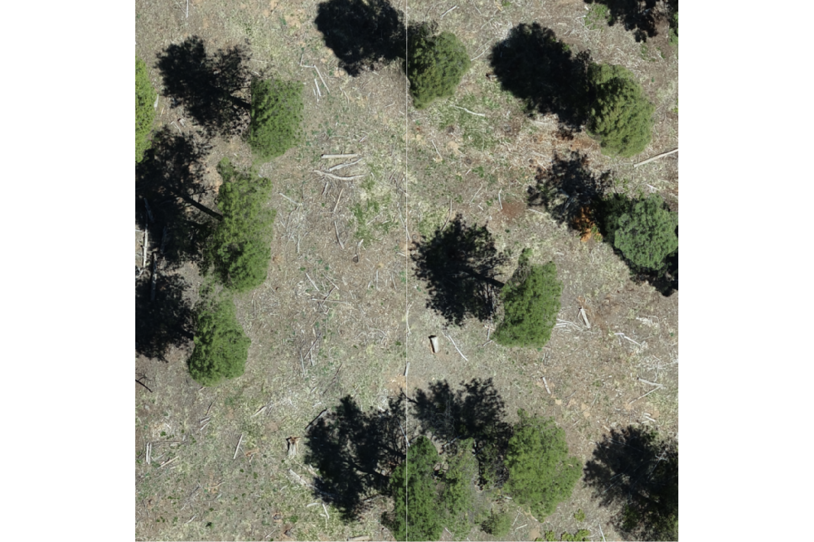
for the entire study area, plotting with terra is much more computationally efficient. let’s plot the RGB data with the stand boundary (black) and image annotated pile footprints (blue)
terra::plotRGB(psinf_rgb_rast, stretch="lin")
# add stand boundary
terra::plot(
psinf_stand_boundary %>%
terra::vect() %>%
terra::project(terra::crs(psinf_rgb_rast))
, add = T, border = "black", col = NA, lwd = 1.2
)
# add pile boundaries
terra::plot(
psinf_slash_piles_polys %>%
dplyr::filter(is_in_stand) %>%
terra::vect() %>%
terra::project(terra::crs(psinf_rgb_rast))
, add = T, border = "blue", col = NA, lwd = 1.2
)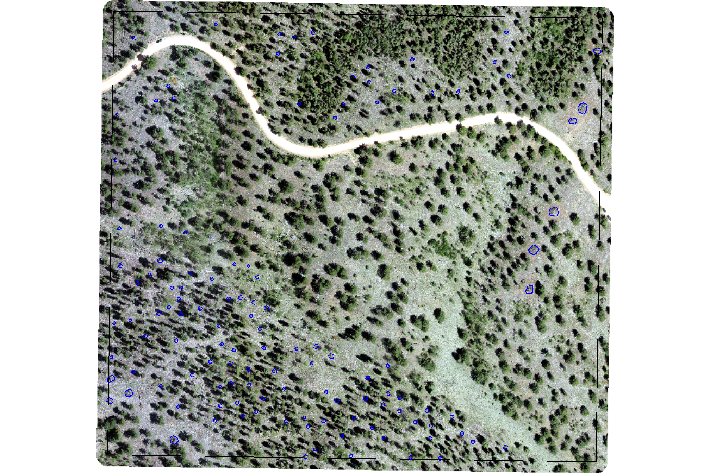
2.3.2 TRFO-BLM Pinyon-Juniper Site
load the original data
#### read RGB data keep only RGB
pj_rgb_rast <- terra::rast(
# "d:/BLM_CO_SWDF_DawsonFuelsTreatment/Final/Ortho/BLM_CO_SWDF_DawsonFuelsTreatment_Ortho_202504.tif"
"../data/dawson_data/dawson_rgb.tif"
) %>%
terra::subset(c(1,2,3))
# rename bands
names(pj_rgb_rast) <- c("red","green","blue")what is the resolution of the original RGB data?
## [1] 0.025883 0.025883let’s reduce the resolution (i.e. increase the raster cell size; make more coarse)
###############################################################
# clip to boundary and resample to change resolution
###############################################################
dir_temp <- "../data/dawson_data/"
rgb_fnm_temp <- file.path(dir_temp,"pj_rgb_rast.tif") # what should the compiled rgb be called?
if(!dir.exists(dir_temp)){dir.create(dir_temp, showWarnings = F)}
if(!file.exists(rgb_fnm_temp)){
# Crop the raster to the rectangular extent of the polygon
# Specify a filename to ensure the result is written to disk
crop_rgb_rast_temp <- pj_rgb_rast %>%
terra::crop(
pj_stand_boundary %>%
sf::st_union() %>%
sf::st_buffer(10) %>%
terra::vect() %>%
terra::project(terra::crs(pj_rgb_rast))
, filename = tempfile(fileext = ".tif")
, overwrite = TRUE
)
# Mask the cropped raster to the precise shape of the polygon
# This function will also be processed on disk due to the file size
pj_rgb_rast <- terra::mask(
crop_rgb_rast_temp
, pj_stand_boundary %>%
sf::st_union() %>%
sf::st_buffer(10) %>%
terra::vect() %>%
terra::project(terra::crs(pj_rgb_rast))
, filename = tempfile(fileext = ".tif")
, overwrite = TRUE
)
## apply the change_res_fn for our analysis we don't need such finery
# this takes too long...
pj_rgb_rast <- change_res_fn(pj_rgb_rast, my_res=my_rgb_res_m, ofile = rgb_fnm_temp)
}else{
pj_rgb_rast <- terra::rast(rgb_fnm_temp)
}test our ggplot2 plotting function on a zoomed-in portion of the study area

for the entire study area, plotting with terra is much more computationally efficient. let’s plot the RGB data with the stand boundary (black) and image annotated pile footprints (blue)
terra::plotRGB(pj_rgb_rast, stretch="lin")
# add stand boundary
terra::plot(
pj_stand_boundary %>%
terra::vect() %>%
terra::project(terra::crs(pj_rgb_rast))
, add = T, border = "black", col = NA, lwd = 1.2
)
# add pile boundaries
terra::plot(
pj_slash_piles_polys %>%
dplyr::filter(is_in_stand) %>%
terra::vect() %>%
terra::project(terra::crs(pj_rgb_rast))
, add = T, border = "blue", col = NA, lwd = 1.2
)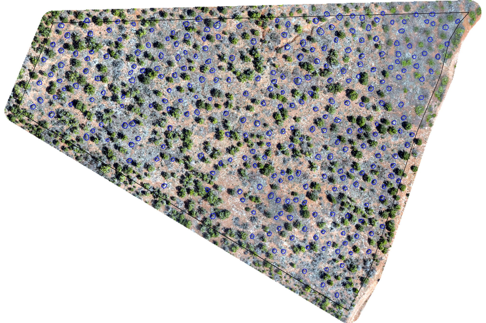
2.3.3 BHEF Ponderosa Pine Site
load the original data. for this site, the orthomosaics are split across multiple files. we’ll read in each, align the resolutions, and use terra::moasaic() to combine
###############################################################
# compile RGB raster
###############################################################
rgb_dir_temp <- "F:/UAS_Collections/BHEF_202306" # where is the raw las and rgb data?
dir_temp <- "../data/BHEF_202306/" # where do you want to save processed data to?
rgb_fnm_temp <- file.path(dir_temp,"bhef_rgb.tif") # what should the compiled rgb be called?
if(!dir.exists(dir_temp)){dir.create(dir_temp, showWarnings = F)}
if(!file.exists(rgb_fnm_temp)){
# read list of orthos
ortho_list_temp <- list.files(
rgb_dir_temp
, pattern = ".*(_RGB|_RBG)\\.(tif|tiff)$"
, full.names = T, recursive = T
) %>%
purrr::map(function(x){terra::rast(x)})
## apply the change_res_fn
ortho_list_temp <- 1:length(ortho_list_temp) %>%
purrr::map(function(x){change_res_fn(ortho_list_temp[[x]], my_res=0.04)})
######## mosaic the raster list
bhef_rgb_rast <- terra::mosaic(
terra::sprc(ortho_list_temp)
, fun = "min" # min only thing that works
, filename = rgb_fnm_temp
, overwrite = T
)
}else{
bhef_rgb_rast <- terra::rast(rgb_fnm_temp) %>%
terra::subset(c(1,2,3))
}
# rename bands
names(bhef_rgb_rast) <- c("red","green","blue")what is the resolution of the original RGB data?
## [1] 0.04 0.04let’s reduce the resolution (i.e. increase the raster cell size; make more coarse)
###############################################################
# clip to boundary and resample to change resolution
###############################################################
dir_temp <- "../data/BHEF_202306/"
rgb_fnm_temp <- file.path(dir_temp,"bhef_rgb_rast.tif") # what should the compiled rgb be called?
if(!dir.exists(dir_temp)){dir.create(dir_temp, showWarnings = F)}
if(!file.exists(rgb_fnm_temp)){
# Crop the raster to the rectangular extent of the polygon
# Specify a filename to ensure the result is written to disk
crop_rgb_rast_temp <- bhef_rgb_rast %>%
terra::crop(
bhef_stand_boundary %>%
sf::st_union() %>%
sf::st_buffer(10) %>%
terra::vect() %>%
terra::project(terra::crs(bhef_rgb_rast))
, filename = tempfile(fileext = ".tif")
, overwrite = TRUE
)
# Mask the cropped raster to the precise shape of the polygon
# This function will also be processed on disk due to the file size
bhef_rgb_rast <- terra::mask(
crop_rgb_rast_temp
, bhef_stand_boundary %>%
sf::st_union() %>%
sf::st_buffer(10) %>%
terra::vect() %>%
terra::project(terra::crs(bhef_rgb_rast))
, filename = tempfile(fileext = ".tif")
, overwrite = TRUE
)
## apply the change_res_fn for our analysis we don't need such finery
# this takes too long...
bhef_rgb_rast <- change_res_fn(bhef_rgb_rast, my_res=my_rgb_res_m, ofile = rgb_fnm_temp)
}else{
bhef_rgb_rast <- terra::rast(rgb_fnm_temp)
}for the entire study area, plotting with terra is much more computationally efficient. let’s plot the RGB data with the stand boundary (black) and image annotated pile footprints (blue)
terra::plotRGB(bhef_rgb_rast, stretch="lin")
# add stand boundary
terra::plot(
bhef_stand_boundary %>%
terra::vect() %>%
terra::project(terra::crs(bhef_rgb_rast))
, add = T, border = "black", col = NA, lwd = 1.2
)
# add pile boundaries
terra::plot(
bhef_slash_piles_polys %>%
dplyr::filter(is_in_stand) %>%
terra::vect() %>%
terra::project(terra::crs(bhef_rgb_rast))
, add = T, border = "blue", col = NA, lwd = 1.2
)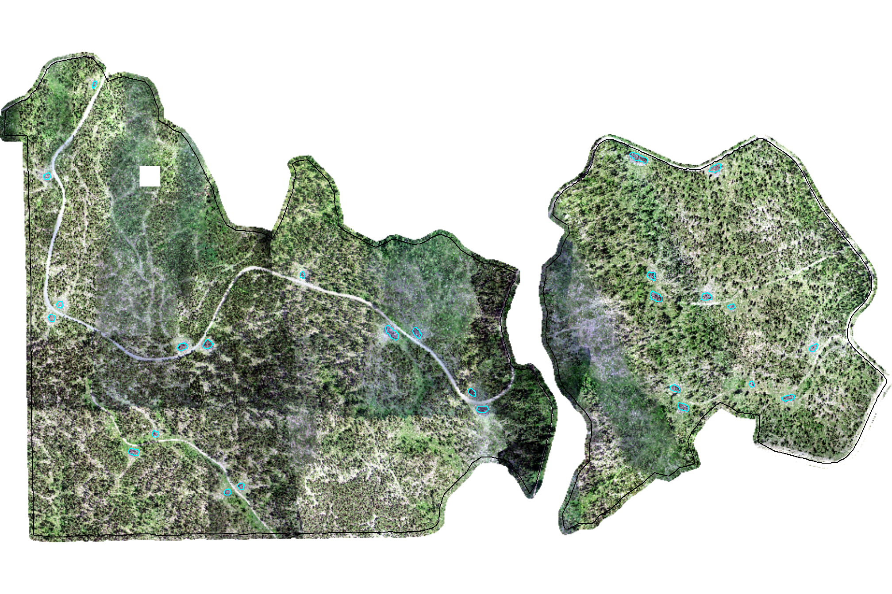
2.3.4 ARNF Ponderosa Pine Site
load the original data
#### read RGB data keep only RGB
arnf_rgb_rast <- terra::rast(
"f:/UAS_Collections/ARNF_DiamondView_202510/DiamondPeak_Switchblade_transparent_mosaic_group1.tif"
) %>%
terra::subset(c(1,2,3))
# rename bands
names(arnf_rgb_rast) <- c("red","green","blue")what is the resolution of the original RGB data?
## [1] 0.02101 0.02101let’s reduce the resolution (i.e. increase the raster cell size; make more coarse)
###############################################################
# clip to boundary and resample to change resolution
###############################################################
dir_temp <- "../data/ARNF_DiamondView_202510/"
rgb_fnm_temp <- file.path(dir_temp,"arnf_rgb_rast.tif") # what should the compiled rgb be called?
if(!dir.exists(dir_temp)){dir.create(dir_temp, showWarnings = F)}
if(!file.exists(rgb_fnm_temp)){
# Crop the raster to the rectangular extent of the polygon
# Specify a filename to ensure the result is written to disk
crop_rgb_rast_temp <- arnf_rgb_rast %>%
terra::crop(
arnf_stand_boundary %>%
sf::st_union() %>%
sf::st_buffer(10) %>%
terra::vect() %>%
terra::project(terra::crs(arnf_rgb_rast))
, filename = tempfile(fileext = ".tif")
, overwrite = TRUE
)
# Mask the cropped raster to the precise shape of the polygon
# This function will also be processed on disk due to the file size
arnf_rgb_rast <- terra::mask(
crop_rgb_rast_temp
, arnf_stand_boundary %>%
sf::st_union() %>%
sf::st_buffer(10) %>%
terra::vect() %>%
terra::project(terra::crs(arnf_rgb_rast))
, filename = tempfile(fileext = ".tif")
, overwrite = TRUE
)
## apply the change_res_fn for our analysis we don't need such finery
# this takes too long...
arnf_rgb_rast <- change_res_fn(arnf_rgb_rast, my_res=my_rgb_res_m, ofile = rgb_fnm_temp)
}else{
arnf_rgb_rast <- terra::rast(rgb_fnm_temp)
}test our ggplot2 plotting function on a zoomed-in portion of the study area

for the entire study area, plotting with terra is much more computationally efficient. let’s plot the RGB data with the stand boundary (black) and image annotated pile footprints (blue)
terra::plotRGB(arnf_rgb_rast, stretch="lin")
# add stand boundary
terra::plot(
arnf_stand_boundary %>%
terra::vect() %>%
terra::project(terra::crs(arnf_rgb_rast))
, add = T, border = "black", col = NA, lwd = 1.2
)
# add pile boundaries
terra::plot(
arnf_slash_piles_polys %>%
dplyr::filter(is_in_stand) %>%
terra::vect() %>%
terra::project(terra::crs(arnf_rgb_rast))
, add = T, border = "blue", col = NA, lwd = 1.2
)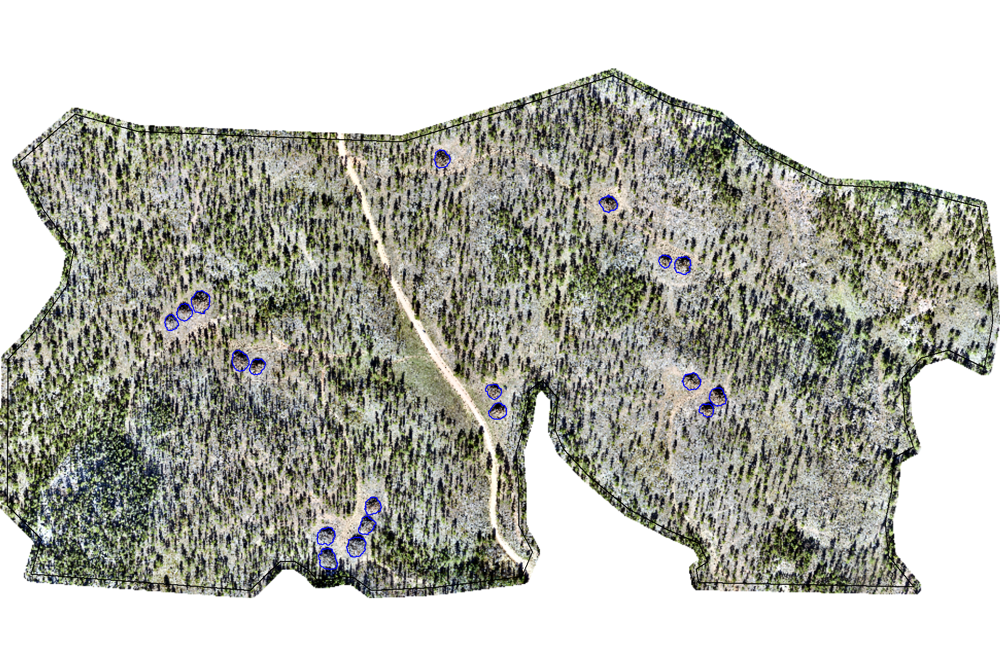
2.4 Slash Pile RGB Imagery
let’s look at the RGB imagery and pile locations. we’ll make a panel of plots for each pile at each study site and place a one square meter box in the middle of each pile to distinguish size
plt_fn_temp <- function(vect, rgb){
# get vector
d <- vect %>%
dplyr::slice(1) %>%
sf::st_transform(terra::crs(rgb))
# make a box
sqm <- d %>%
sf::st_centroid() %>%
sf::st_buffer(
sqrt(1/4) ## numerator = desired plot size in m2
, endCapStyle = "SQUARE"
) %>%
dplyr::mutate(dummy=1)
# buff
buff <- dplyr::case_when(
d$image_gt_diameter_m < 4 ~ 4
, d$image_gt_diameter_m > 10 ~ 2.5
, T ~ d$image_gt_diameter_m*(2/3)
)
# plt
ortho_plt_fn(
rgb_rast = rgb
, stand = sf::st_union(d, sqm)
, buffer = buff
, add_stand = F
) +
ggplot2::geom_sf(data = sqm, fill = NA, color = "white", inherit.aes = F) +
ggplot2::geom_sf(data = d, fill = NA, lwd = 1, color = "blue", inherit.aes = F) +
ggplot2::labs(
subtitle = base::bquote(
"pile area: " ~
.(scales::comma(d$image_gt_area_m2, accuracy = 0.1)) ~
m^2
)
) +
ggplot2::theme(
plot.subtitle = ggplot2::element_text(hjust = 0.5, size = 7)
, plot.title = ggplot2::element_text(hjust = 0.5, size = 8)
)
}
# plot largest, smallest, and median
samp_plt_fn_temp <- function(piles, ortho) {
min_temp <-
plt_fn_temp(
vect = piles %>%
dplyr::filter(is_in_stand) %>%
dplyr::ungroup() %>%
dplyr::slice_min(n = 1, order_by = image_gt_area_m2, na_rm = T, with_ties = F)
, rgb = ortho
) +
ggplot2::labs(title = "smallest")
med_temp <-
plt_fn_temp(
vect = piles %>%
dplyr::filter(is_in_stand) %>%
dplyr::ungroup() %>%
dplyr::slice_min(
n = 1
, order_by = abs(image_gt_area_m2 - median(image_gt_area_m2, na.rm = TRUE))
, na_rm = T, with_ties = F
)
, rgb = ortho
) +
ggplot2::labs(title = "median")
max_temp <-
plt_fn_temp(
vect = piles %>%
dplyr::filter(is_in_stand) %>%
dplyr::ungroup() %>%
dplyr::slice_max(n = 1, order_by = image_gt_area_m2, na_rm = T, with_ties = F)
, rgb = ortho
) +
ggplot2::labs(title = "largest")
# combine
patchwork::wrap_plots(
list(min_temp, med_temp, max_temp)
, ncol = 3
)
}2.4.1 PSINF Mixed Conifer Site
example smallest, median, and largest slash pile (red) with a one square meter box for size reference
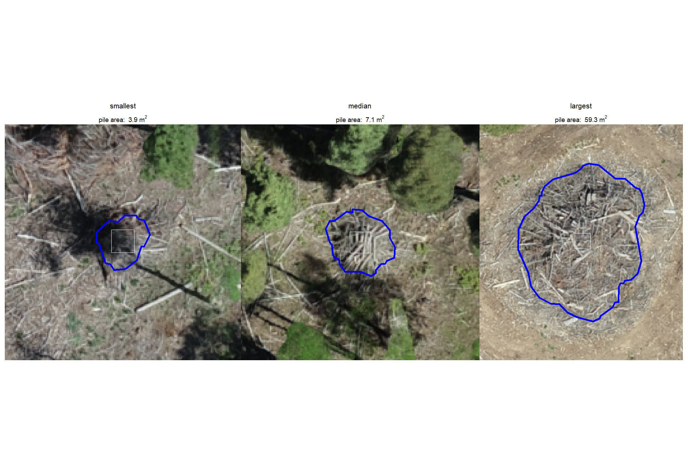
2.4.2 TRFO-BLM Pinyon-Juniper Site
example smallest, median, and largest slash pile (red) with a one square meter box for size reference
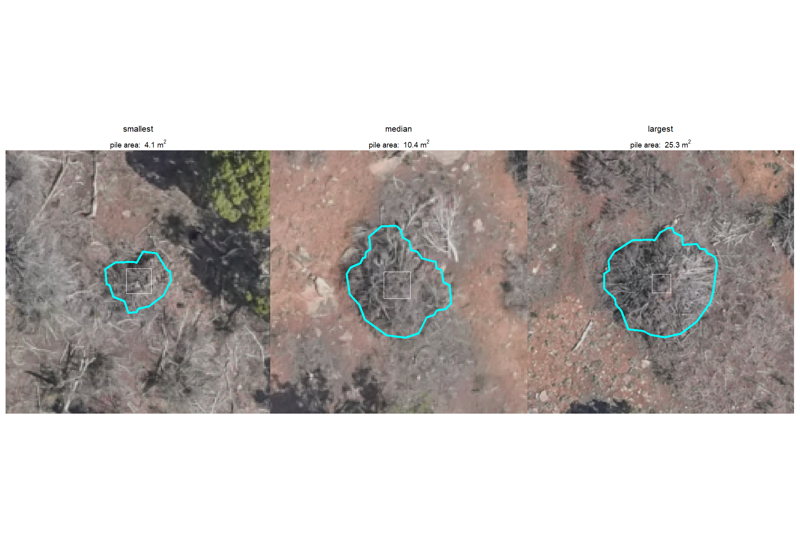
2.4.3 BHEF Ponderosa Pine Site
example smallest, median, and largest slash pile (red) with a one square meter box for size reference
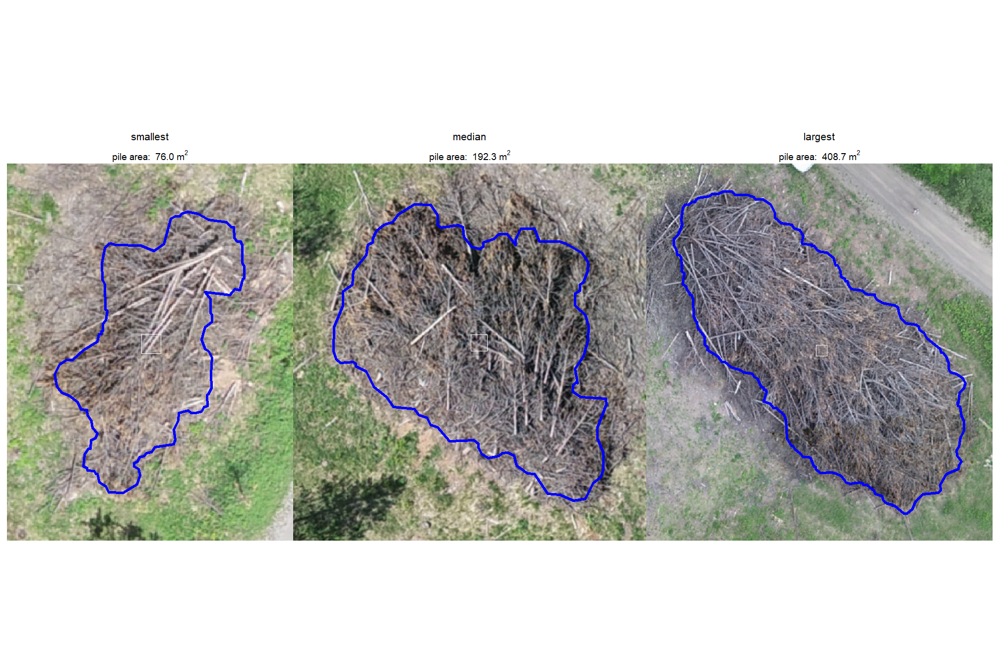
2.4.4 ARNF Ponderosa Pine Site
example smallest, median, and largest slash pile (red) with a one square meter box for size reference
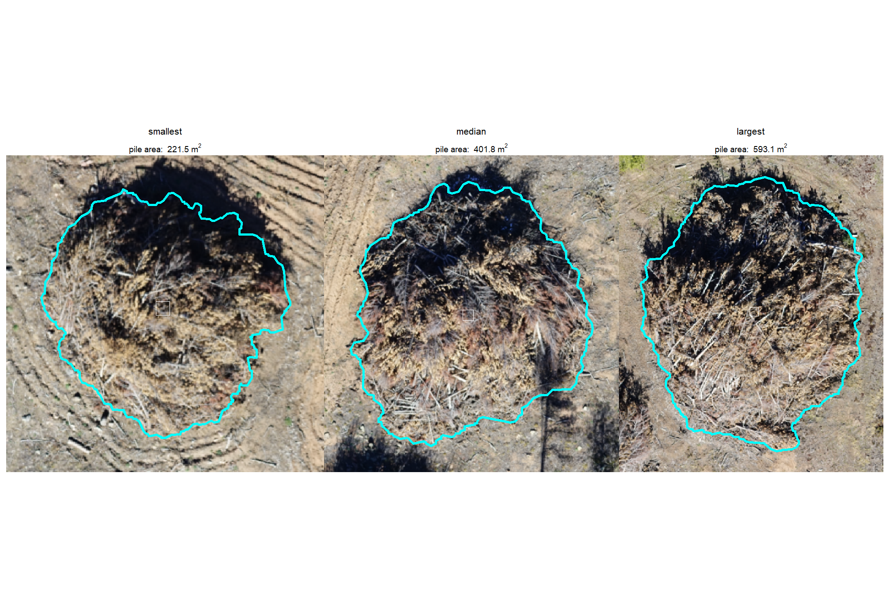
2.4.5 All
patchwork::wrap_plots(
patchwork::wrap_elements(
psinf_samp_plt_fn_temp +
patchwork::plot_annotation(
title = "PSINF Mixed Conifer Site"
, theme = ggplot2::theme(plot.title = ggplot2::element_text(size = 10))
)
)
, patchwork::wrap_elements(
pj_samp_plt_fn_temp +
patchwork::plot_annotation(
title = "TRFO-BLM Pinyon-Juniper Site"
, theme = ggplot2::theme(plot.title = ggplot2::element_text(size = 10))
)
)
, patchwork::wrap_elements(
bhef_samp_plt_fn_temp +
patchwork::plot_annotation(
title = "BHEF Ponderosa Pine Site"
, theme = ggplot2::theme(plot.title = ggplot2::element_text(size = 10))
)
)
, patchwork::wrap_elements(
arnf_samp_plt_fn_temp +
patchwork::plot_annotation(
title = "ARNF Ponderosa Pine Site"
, theme = ggplot2::theme(plot.title = ggplot2::element_text(size = 10))
)
)
, ncol = 1
)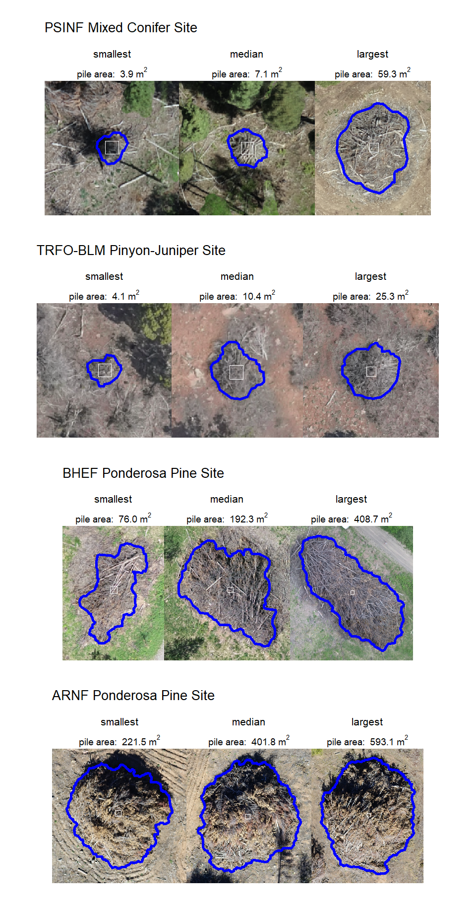